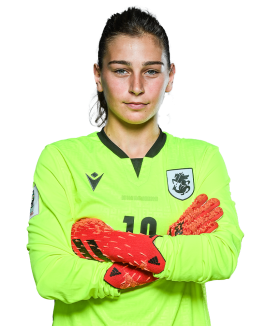
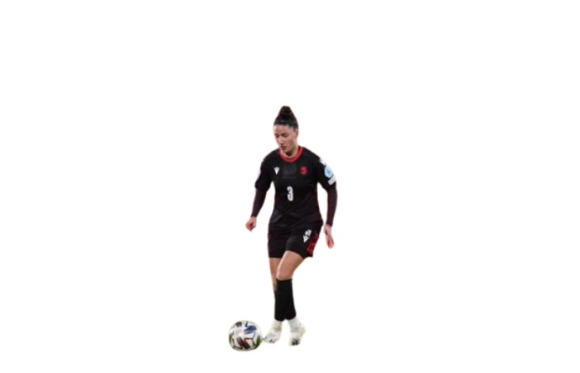

გაბუნია სამი წლის განმავლობაში თამაშობდა ლანჩხუთის საფეხბურთო კლუბში. 2022 წლის დეკემბრის ბოლოს ის გადავიდა თურქეთში და კონტრაქტი გააფორმა დიარბაქირულ კლუბ „Amed S.F.K.“-თან. თურქეთში მან მხოლოდ 2022–23 წლების სუპერლიგის მეორე ნახევარი გაატარა. „Amed S.F.K.“-ში მხოლოდ ერთი მატჩი ჩაატარა, რის შემდეგაც 2023 წლის 3 მარტს საქართველოში დაბრუნდა. ამჟამად თამაშობს საფეხბურთო კლუბ „კვარტალში“.
გაბუნიას უთამაშია როგორც ასაკობრივ, ასევე საქართველოს ეროვნულ ნაკრებში. მან მონაწილეობა მიიღო უეფას ქალთა ევრო 2021-ის საკვალიფიკაციო ეტაპზე. ის ასევე გამოიძახეს საქართველოს ნაკრებში 2023–2024 წლების სეზონისთვის, სადაც ყველა მატჩში სასტარტო მეკარე იყო. 2023 წლის 1 დეკემბერს მან ითამაშა მატჩში, რომელშიც საქართველოს ქალთა ნაკრებმა პირველი ოფიციალური სატურნირო გამარჯვება მოიპოვა — ანგარიშით 4:2 დაამარცხა ლუქსემბურგის ქალთა ნაკრები.
საკლუბო კარიერა 2012-13 წლების სეზონში ნინო პასიკაშვილი გადავიდა ბელარუსიის ქალთა პირველ ლიგაში მოთამაშე კლუბში „FC მინსკი“. მომდევნო სეზონში ის უკრაინაში გადავიდა და შეუერთდა „FC ხარკოვს“. 2014-16 წლებში პასიკაშვილი თამაშობდა თურქეთის ქალთა პირველ ლიგაში, კლუბ „Adana İdmanyurduspor“-ში. 2016 წლის 5 თებერვალს მან კონტრაქტი გააფორმა სტამბოლურ კლუბთან „ატაშეჰირ ბელედიესპორი“. მრავალი წლის შემდეგ, პასიკაშვილი დაბრუნდა საქართველოში და 2018-2019 წლების სეზონებში თამაშობდა „WFC Nike“-ში. 2020 წელს გადავიდა ახლად ჩამოყალიბებულ კლუბ „კვარტალში“, სადაც გახდა გუნდის კაპიტანი და 1.5 სეზონში 25-ზე მეტი მატჩი ჩაატარა. 2021 წელს ნახევარი სეზონის შემდეგ მან „კვარტალი“ დატოვა და გადავიდა „სოხუმის დინამოში“. ერთი წლისა და ნახევრის შემდეგ კვლავ დაბრუნდა „კვარტალში“, სადაც ისევ კაპიტანია. უკანასკნელ ორ წელზე ნაკლებ პერიოდში მან 30-ზე მეტი მატჩი ჩაატარა და ამ დროისთვის მისი კლუბი საქართველოს ჩემპიონატის ლიდერია.
ნინო პასიკაშვილმა კარიერა დაიწყო საქართველოს 17-წლამდე და 19-წლამდე ქალთა ნაკრებებში. მოგვიანებით მან ითამაშა ეროვნული გუნდის რიგებში და მონაწილეობა მიიღო 2015 წლის FIFA-ს ქალთა მსოფლიო ჩემპიონატის საკვალიფიკაციო ეტაპზე, სადაც საკუთარ ნაკრებს ერთი გოლიც მოუტანა. ამჟამად ის საქართველოს ქალთა ნაკრების სასტარტო შემადგენლობის წევრია. მისი მონაწილეობით ეროვნულმა გუნდმა ლუქსემბურგის წინააღმდეგ 7 წლიანი პაუზის შემდეგ მოიპოვა პირველი ოფიციალური გამარჯვება. 2024 წლის ივლისში კი პასიკაშვილი გუნდის შემადგენლობაში იყო ისტორიულ მატჩში, რომელშიც საქართველომ ლიტვას სძლია და პირველად გავიდა უეფას ქალთა ევროს საკვალიფიკაციო პლეი-ოფში.
